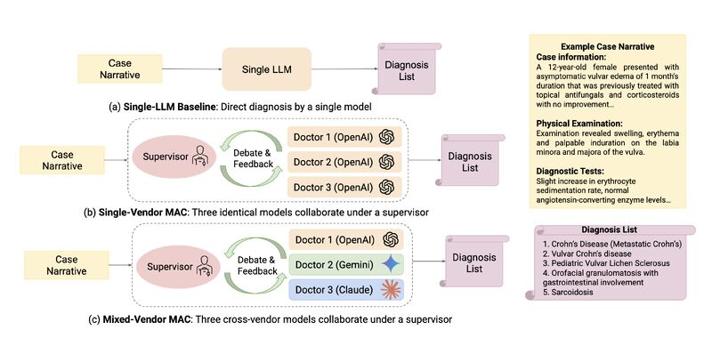

My research focuses on LLM interpretability, multi-agent AI systems for healthcare, and understanding social biases in large language models.

Designed mixed-vendor multi-agent systems combining o4-mini, Gemini, and Claude to mitigate correlated failure modes in medical reasoning. Achieved state-of-the-art accuracy on RareBench and DiagnosisArena by pooling complementary model inductive biases.